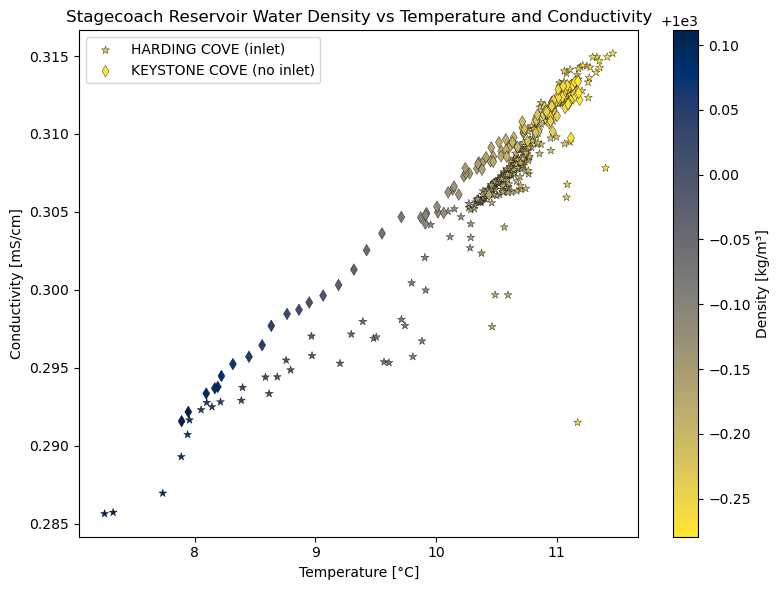
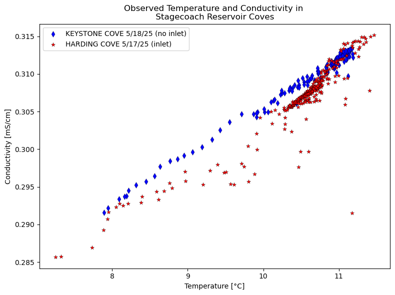

EOS.ipynb#
import numpy as np
import matplotlib.pyplot as plt
import pandas as pd
import matplotlib.patches as mpatches
def lake_water_density(temp_C, cond_mS_cm):
"""
Estimate lake water density based on temperature (°C) and conductivity (mS/cm).
Parameters:
temp_C: Temperature in °C (scalar or array)
cond_mS_cm: Conductivity in mS/cm (scalar or array)
Returns:
Density in kg/m³
"""
rho_0 = 1000 # Reference density of freshwater at 4°C [kg/m³]
alpha = 2e-4 # Thermal expansion coefficient [°C⁻¹]
beta = 0.8 # Salinity influence coefficient
T0 = 4 # Reference temperature [°C]
salinity = 0.012 * cond_mS_cm # Estimate salinity from conductivity [g/kg]
density = rho_0 * (1 - alpha * (temp_C - T0) + beta * salinity / 1000)
return density
# Create a grid for general density surface
temp_vals = np.linspace(7, 12, 100) # Temperature range (°C)
cond_vals = np.linspace(.284,.319, 100) # Conductivity range (mS/cm)
T, C = np.meshgrid(temp_vals, cond_vals) # Meshgrid for surface
rho = lake_water_density(T, C) # Compute density
# Stagecoach Reservoir values
stagecoach_temp = 11.15 # °C
stagecoach_cond = np.linspace(307, 315, 100) / 1000 # Convert µS/cm to mS/cm
stagecoach_density = lake_water_density(stagecoach_temp, stagecoach_cond)
total_df = pd.read_csv('../data/total_df.csv') # load in data
# Keystone Cove
KEY_Full = total_df[total_df['Area'] == 'KEY'].copy() # filter by area
KEY_Full['UTC Time'] = pd.to_datetime(KEY_Full['UTC Time'])
KEY_18 = KEY_Full[KEY_Full['UTC Time'].dt.date == pd.to_datetime('2025-05-18').date()]
# Harding Cove
HAR_Full = total_df[total_df['Area'] == 'HAR'].copy()
HAR_Full['UTC Time'] = pd.to_datetime(HAR_Full['UTC Time'])
HAR_17 = HAR_Full[HAR_Full['UTC Time'].dt.date == pd.to_datetime('2025-05-17').date()]
# Plotting
fig, ax = plt.subplots(figsize=(8, 6))
# contour = ax.contourf(T, C, rho, levels=50, cmap="Blues")
# Plot Stagecoach data
plot = ax.scatter(HAR_17['Temperature (°C)'], HAR_17['Conductivity (µS/cm)']/1000, c=HAR_17['Density (kg/m³)'],
cmap='cividis_r', label='HARDING COVE (inlet)', marker="*", edgecolors= 'k', linewidths=0.25)
ax.scatter(KEY_18['Temperature (°C)'], KEY_18['Conductivity (µS/cm)']/1000, c=KEY_18['Density (kg/m³)'],
cmap='cividis_r', label='KEYSTONE COVE (no inlet)', marker='d', edgecolors='k', linewidths=0.25)
cbar = fig.colorbar(plot, ax=ax)
cbar.set_label('Density [kg/m³]')
# Labels and legend
ax.set_title('Stagecoach Reservoir Water Density vs Temperature and Conductivity')
#ax.set_xlim(7, 12)
ax.set_xlabel('Temperature [°C]')
#ax.set_ylim(.29, .316)
ax.set_ylabel('Conductivity [mS/cm]')
ax.legend(loc='upper left')
plt.tight_layout()
plt.show()

# Plotting
fig, ax = plt.subplots(figsize=(8, 6))
# contour = ax.contourf(T, C, rho, levels=50, cmap="Blues")
# Plot Stagecoach data
ax.scatter(KEY_18['Temperature (°C)'], KEY_18['Conductivity (µS/cm)']/1000, c='b',
label='KEYSTONE COVE 5/18/25 (no inlet)', marker='d', edgecolors='k', linewidths=0.25)
ax.scatter(HAR_17['Temperature (°C)'], HAR_17['Conductivity (µS/cm)']/1000, c='r',
label='HARDING COVE 5/17/25 (inlet)', marker="*", edgecolors= 'k', linewidths=0.25)
# Labels and legend
ax.set_title('Observed Temperature and Conductivity in \n Stagecoach Reservoir Coves ')
#ax.set_xlim(7, 12)
ax.set_xlabel('Temperature [°C]')
#ax.set_ylim(.29, .316)
ax.set_ylabel('Conductivity [mS/cm]')
ax.legend(loc='upper left')
plt.tight_layout()
plt.show()
